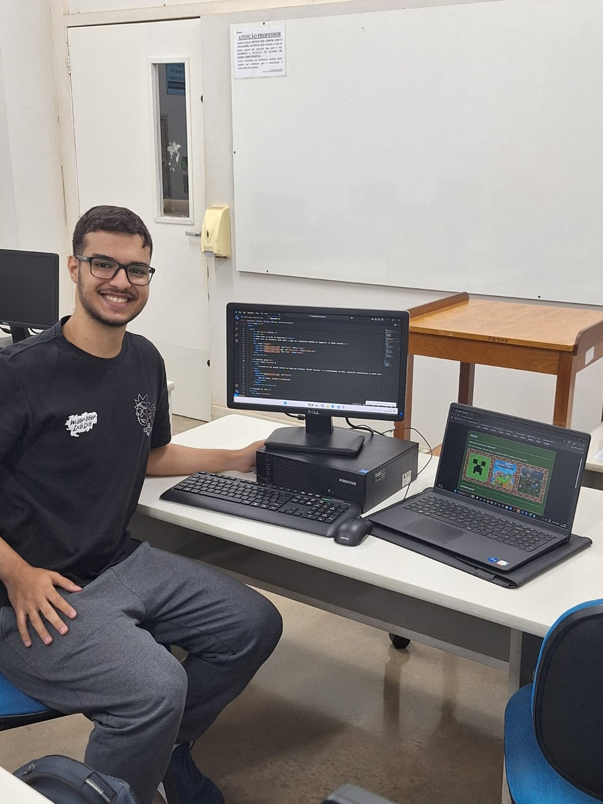

Sobre o projeto
Olá, eu sou João Vitor, curso Sistemas de informação pela uniube e o Curso Técnico de informática pela UFTM, ambos no 3º semestre.
Na disciplina Tecnologias para Internet, ministrada na Uniube pelo professor Joabe Fuzaro, fui encarregado de desenvolver um site de tema livre que contenha alguns requisitos. O tema em questão, foi escolhido por mim, o jogo mundialmente famoso Minecraft, pois é um jogo que eu tenho bastante familiaridade, e tem muito conteúdo que possa ser citado de maneira educacional.
Por cursar 2 cursos ao mesmo tempo, eu acredito que ja desenvolvi muito profissionalmente, porém ainda tenho muito a aprender, por isso, não dispensei o uso de ferramentas de IA, para o auxilio. Durante o código, deixei algumas linhas de comentários que informam quais trechos eu recorri a IA, por falta de experiência, mas tento sempre assimilar tudo que coloco no código e tento reformular, a fim de ter mais minha identidade própria.
Em geral, é isso que tenho para falar, caso deseja entrar em contato comigo, na página 'contato' tem os links para meu Instagram, Linkedin e Github. Tem também uma área de enviar e-mails, porém ainda não fiz funcionar e não sei se vou mexer nela, mas de qualquer jeito, está la.
Enfim, muito obrigado pela atenção e jogue Minecraft, é um jogo incrível.
